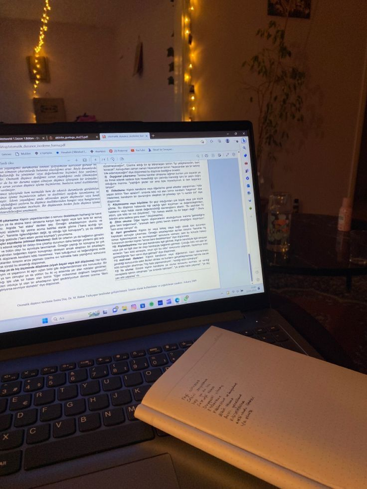

WRITING
One of my favorite activities! I have been writing a lot and about everything since I was ten years old: romances, dystopias, dramatic comedies, historical dramas, poetry... It is by wanting to learn about this or that subject while writing books, by thinking about scenarios and plot twists, that my curiosity and creativity develop. What's more, this activity allows me to express myself very well in writing, to synthesize my thoughts, to be clear, and all without spelling mistakes.